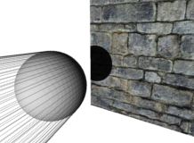

Choose which format you want. The archive contains the whole project.


This is the homepage of a free Java library for OpenGl projects. It will give you the ability to add shadows to your project in just a few minutes. As this project is in active development and has currently reached Alpha stadium.
The project is currently hosted on Github. Please follow this link to get to the repository, or use the Zip or Tar buttons on the right side to start your download. The project is currently hosted on Github.
 Here is a screenshot of a simple scene. A sphere is casting shadow on a brick wall. The lines are drawn from the light source to the silhouette of the sphere, which is then used to create a shadow volume, that is used to create the shadow effect.
This scene is the example implementation of the library and is included in the download and in the repository.
It is currently well documented and you should have no problems using it.
A tutorial how to use the lib will follow in the next few days.